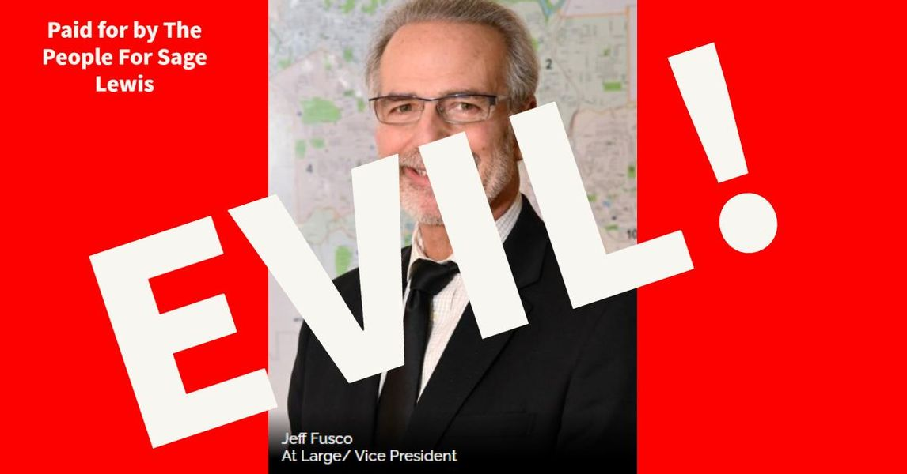

Timeline photos
Jeff Fusco is a terrible, evil human being. He put up a resolution on the Monday 10-24-2022 Committee Meeting at the last minute completely against the rules of how resolutions are submitted TO INVALIDATE ISSUE 10.
He is against Issue 10. An Issue created by the people, put on the ballot by collecting 7000 signatures. And now he wants to make a public statement 15 days before an election on the issue to taint the election.
HE IS SO EVIL SO TERRIBLE. He hates the people. He resents his constituents.
WE MUST GET HIM OUT OF CITY COUNCIL IN MAY 2023.